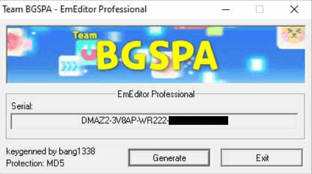
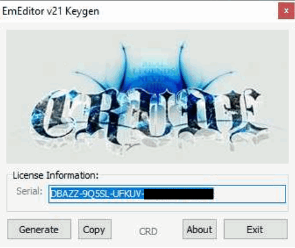

EmEditor 14 Legacy Registration Key Generators Comparison
There are a good number of illegitimate registration keys generator on the Internet for EmEditor, targeting the version 14 legacy registration key format. This post compares all such key generators I can find on the Internet. The main goal is to find out:
- Whether they generate working keys that can be accepted by EmEditor 24.x and 25.x;
- Whether EmEditor will determine it is legitimate locally (excluding online checks, since almost all generated keys do not have corresponding purchase records and thus they cannot pass online checks, unless it gets lucky to generate the same key as a genuine sold key).
To prevent the generated keys in this post from being used to register EmEditor illegitimately, I mask the last two parts of all generated keys, since all information related to expiration dates and blacklisted patterns is in the first three parts.
This post is for educational purposes only. I do not endorse any of key generators mentioned. The key generators may or may not be safe to run. If you download key generators, there are risks that malicious programs can be included by the original authors and/or distributors. If you do not have sufficient knowledge about security and malware, it is advised that you run them in virtual machines (preferably with latest security patches and without file or network sharing or "tools" or "guest additions" that provide convenient direct interaction with the hosts) or online sandboxes designed for behavior analysis.
The results are in the table below.
"Valid" means that the program will accept the registration keys generated.
"Genuine" means that the generated keys can pass legitimacy checks locally, which means that the program will not prompt You might be a victim of software piracy messages when the machine is not connected to the Internet or the program's network access has been blocked.
| Author / Group | Release Date | Targeted Version | License Type | Valid | Genuine |
|---|---|---|---|---|---|
| BTCR | 2023-06-05 | 22.4.2 | Expiration | True | False |
| bang1338-BGSPA | 2023-01-16 | N/A | Lifetime | True | True |
| JonArbuckle-B4A | 2018-09-06 | N/A | Lifetime | True | True |
| GRUiA-PRF | 2023-03-02 | 22.2.2 | Lifetime | True | True |
| RadiXX11 | 2019-02-08 | N/A | Lifetime | True | True |
| Re1ndeer_Herder | 2017-11-20 | 17.2.4 | Lifetime | True | True |
| IzzaLunA-FEELiNNERS | 2024-05-09 | 24.x.x | Lifetime / Expiration | True | False |
| Shadow Mask | N/A / 2019-03-27 | 17.4.1 / N/A | Expiration / Lifetime | True | True |
| CRD | 2021-01-13 / 2021-10-26 | 20.4.4 / 21.2.0 | Expiration | True | False |
Below are screenshots of the key generators, which can support my above argument of genuine license keys if you know how the program does local checks.
BTCR

bang1338-BGSPA

JonArbuckle-B4A
GRUiA-PRF
RadiXX11

Re1ndeer_Herder

IzzaLunA-FEELiNNERS
Shadow Mask


CRD

